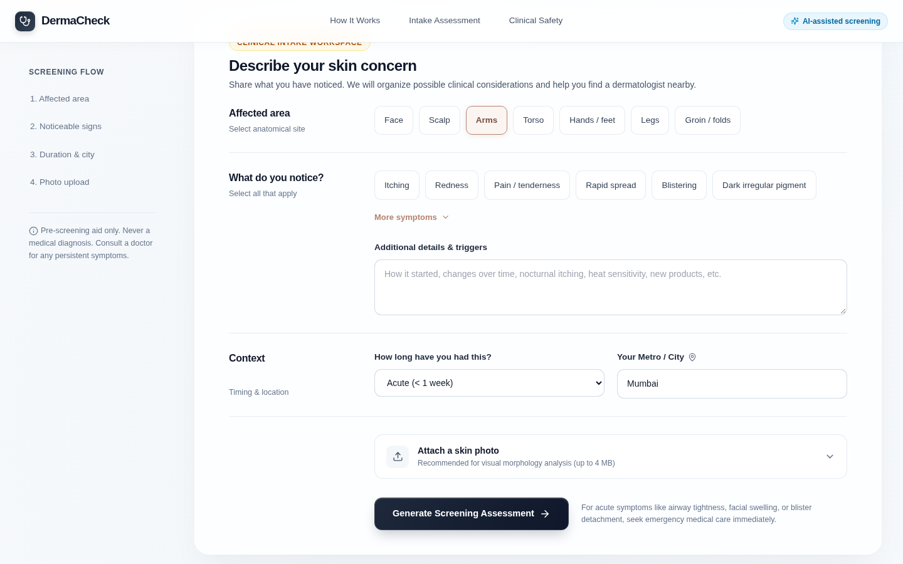

An AI-assisted dermatology screening and local care discovery prototype: design, implementation, business model and operating plan.
DermaCheck collects a person's skin concern, optional photograph, affected body area, duration and city through a web interface. A FastAPI service requests a structured AI screening response, highlights selected red flags and proposes nearby dermatology options. The product is positioned as a pre-consultation aid: it helps organize information and prompt appropriate follow-up, while diagnosis and treatment remain the responsibility of a registered medical practitioner.
This report explains the implemented system, maps it to asynchronous teledermatology and referral concepts, and develops a realistic business and operations plan. It distinguishes present functionality from safeguards and partnerships that would be required before a clinical service could be launched.
Skin concerns are frequently first noticed outside a clinic. A patient may have a photograph and a description but be unsure which details matter, how urgently to seek care, or where to find a dermatologist. Teledermatology is well suited to image-and-history exchange, but image quality, incomplete history and the absence of a physical examination impose real limits. The project therefore focuses on structured intake and referral support, not remote diagnosis.
Build a responsive web prototype that converts unstructured patient observations into a readable screening summary and a list of local care options, while making escalation and clinical limitations visible.
No doctor participates in the current workflow. There is no medical record, appointment booking, prescription, clinician verification workflow or validated diagnostic performance claim. The output is educational pre-screening only.
The person chooses an affected area, symptoms, duration and city; a photo is optional. The service returns a lead summary, possible conditions with evidence and conservative information, warning notices where generated, and dermatologist or clinic suggestions. The interface keeps a prominent “not a diagnosis” message and directs emergency symptoms to immediate in-person care.
| Implemented in repository | Not yet implemented |
|---|---|
| React/TypeScript intake UI; optional photo; FastAPI endpoint; schema-validated screening response; Google-search-grounded care suggestions with a Mumbai fallback; basic file/input limits; Vercel build and API routing. | RMP-led teleconsultation; patient consent workflow; verified provider directory; appointment or referral completion; medical record integration; outcome measurement; formal model evaluation; production-grade abuse controls and governance. |
1. Define the contract: the backend specification and handoff documents set the multipart inputs, structured response fields and mandatory safety messages. 2. Build and integrate: FastAPI/Pydantic orchestrates screening and search; React provides the intake and results views. 3. Iterate and deploy: the interface was refined for desktop and mobile, and Vercel configuration connects the static site with the Python API. This sequence explains the current artifact; it is not a formal clinical development lifecycle.
Telemedicine distinction. Under Indian guidance, a teleconsultation is a professional interaction involving a registered medical practitioner (RMP), patient identification, consent and clinical judgment [3]. DermaCheck is a preparatory digital-health tool, not itself an RMP consultation.
The application uses a single-page React 18 and TypeScript frontend (Vite) with a FastAPI Python backend. The browser sends a multipart form to POST /api/v1/triage-poc. The backend validates text fields and image type/size, then sends the supplied history and optional photo to an external multimodal model API. It requests a structured response through a Pydantic schema and performs a second, search-grounded request for local dermatologist options.
| Layer | Current implementation | Purpose |
|---|---|---|
| Interface | React, TypeScript, CSS, Vite | Collect inputs; display warnings, rationale and care options. |
| Application API | FastAPI, Pydantic, Pillow | Validate inputs, read images, enforce response contract. |
| AI services | Google GenAI SDK; Gemini 2.5 Flash; Google Search grounding | Generate screening text and location-based suggestions. |
| Deployment | Vercel configuration with static frontend and Python function | Serve web app and API from one deployment target. |
Data contract. Each screening response can contain an alert level, a pigmented-lesion warning flag, a summary, clinical analysis, one to four possible conditions with fit/evidence/self-care/escalation text, and suggested doctors. Pydantic checks the response shape; it does not validate medical truth or the quality of a referral.

Figure 1. Current intake interface: structured symptoms, context and optional photo upload (captured from local build, 4 Nov 2026).
Model provenance. The repository currently calls a third-party foundation-model API. The application has not trained, hosted or clinically validated an in-house model. Public UI copy uses the neutral term “AI-assisted screening”; technical and academic documentation should disclose the actual integration.
The closest telemedicine pattern is asynchronous “store-and-forward” teledermatology: a person assembles an image and clinical history for later review [4]. The American Academy of Dermatology describes store-and-forward exchange of photographs and other images between a referring clinician and dermatologist [5]. DermaCheck performs the preparation and AI screening steps; clinician review is a proposed next stage, not an existing feature. A future clinic-led version could connect this intake “spoke” to a dermatologist “hub.”
| Telemedicine concept | Connection to this project | Gap before real service |
|---|---|---|
| Asynchronous intake | Photo plus symptoms, anatomical site and duration can be captured without a live call. | Secure handoff and follow-up with an identified clinician. |
| Clinical decision support | Possible conditions and rationale help organize questions for an RMP. | Validation, audit, human review and calibrated uncertainty. |
| Triage and escalation | Prompted red flags and ABCDE pigmented-lesion warning aim to identify care urgency. | Safety testing; fail-safe handling of false negatives; emergency pathways. |
| Referral and continuity | City-based suggestions can reduce search effort after screening. | Verify practitioner credentials, availability, contact data and referral completion. |
| Equity and access | Web access can reduce the first information barrier. | Language, accessibility, low-bandwidth and non-digital alternatives. |
Indian guidance places consultation decisions with the RMP and requires attention to identity, consent, modality, evaluation and management [3]. The product should route people to qualified care, not replace professional judgment.
Dermatology depends on adequate images and context. Missing photos, poor lighting, diverse skin tones and inaccessible body sites can alter visible features. The UI should say when evidence is insufficient [5].
The ABCDE signs are warning signs for evaluation, not an automated melanoma diagnosis [6]. A person with airway symptoms or rapidly severe signs should seek emergency care rather than rely on a web result.
WHO guidance calls for human autonomy, safety, transparency and accountability in health AI [2]. That implies documented limitations, review of errors, privacy controls and a route to report harm.
WHO recommends telemedicine only where it complements face-to-face services and where safety, privacy, traceability, accountability and security can be monitored [1]. This informs the operating plan on page 6.
Customer problem. People with a skin concern need a clear route from first observation to the right level of care. Clinics need useful pre-visit context without inheriting misleading AI conclusions. The proposed value is a better intake and referral handoff, rather than a claim to automate diagnosis.
Organized symptoms, warning guidance and a shorter search for a dermatologist.
A structured pre-visit summary that can be checked against the original image and history.
Potentially improved navigation, access and referral completion if integrated into care pathways.
| Element | Practical proposal |
|---|---|
| Primary segment | Dermatology clinics, hospitals or university clinics running supervised digital intake. |
| Offering | White-label pre-consultation capture, safety prompts, clinician review queue and referral tracking after validation. |
| Revenue route | Institutional subscription or per-completed-intake fee. Keep patient triage access free in the pilot. |
| Key partners | Registered dermatologists, hospital IT/security teams, accessibility and language reviewers. |
| Cost drivers | AI and search API usage, serverless execution, provider verification, clinical review, support and security. |
| Trust constraint | Do not sell ranking in the care list or imply a listing is “verified” without a documented check. |
The current repository has no measured traffic, conversion or cost data, so a numeric forecast would be speculative. A pilot should calculate cost per completed assessment = (model calls + search calls + hosting + support + verification) ÷ completed assessments. For institutional pricing, contribution margin is revenue per completed assessment minus that cost. Sensitivity analysis should include image-heavy cases, repeat submissions, quota exhaustion and clinician review time.
A clinic will adopt the intake if it saves staff time without increasing unsafe referrals or clinician correction burden. Measure it rather than assume it.
Any external launch requires clinician governance, transparent claims, data handling review, provider verification and evidence from prospective testing.
| Stage | User / clinic action | Operator responsibility |
|---|---|---|
| 1. Intake | User supplies photo and symptoms, sees scope/consent information. | Accessible form, file checks, consent record if care is offered. |
| 2. Screening | User receives provisional summary and explicit escalation advice. | Monitor latency, failures, quota and red-flag outputs; prevent unsafe certainty. |
| 3. Referral | User chooses a clinic or RMP contact. | Verify credentials, listing freshness and conflicts of interest. |
| 4. Consultation | RMP reviews original inputs and decides next step. | Secure handoff, provenance, recordkeeping and feedback loop. |
| 5. Follow-up | Patient reports whether care was reached. | Track completion, complaints, incidents and quality improvement. |
Name a medical lead; review prompts, escalation rules and a sample of outputs; publish indications and exclusions; define a rapid path for safety incidents and clinician overrides.
Confirm RMP registration, clinic contact details and availability before marking any listing verified. Refresh on a schedule; remove stale entries and record corrections.
Explain that uploaded photos go to an external AI service. Minimize data, secure transmission, define retention/deletion with vendors, restrict access and document breach response.
Add server-side rate limits, upload scanning/validation, monitoring and an outage message. On model quota or search failure, avoid fabricating results; offer a safe manual care path.
| Metric | Definition | Why it matters |
|---|---|---|
| Assessment completion | Valid completed requests ÷ started intakes | Usability and access. |
| Service reliability | Successful responses; p95 response time; quota errors | Continuity and cost. |
| Safety signal | Clinician-reviewed false negatives/positives for urgent cases | Clinical risk; needs adjudicated cases. |
| Referral completion | Confirmed clinician contact ÷ suggested referrals | Whether navigation leads to care. |
The present application demonstrates a working flow, not diagnostic accuracy. Structured output and a polished interface can make an answer appear authoritative even when it is wrong. Evaluation must therefore test clinical safety, usability, equity and service operations separately.
No physical examination or dermoscopy; no calibration or external validation; prompt-generated red flags may miss cases; “fit” labels are qualitative, not probabilities.
Search-grounded listings can be stale or incorrect; the fallback list is Mumbai-specific; there is no credential check or appointment confirmation.
The backend has no persistent patient database, but input is sent to a third-party AI provider. Retention and processing terms require review before clinical use.
CORS is broad; API access is unauthenticated; no repository-level rate limiter is present; the service depends on external quota and availability.
Conclusion. DermaCheck is a useful engineering demonstration of asynchronous intake, AI-assisted information organization and care navigation. Its strongest real-world path is a supervised clinic workflow where the system prepares information and a registered practitioner makes clinical decisions. Its next milestone is evidence and governance, not a broader diagnostic claim.
| Artifact | Evidence used in this report |
|---|---|
frontend/src/components/TriageDashboard.tsx | Input fields, result display, safety copy, API request and responsive intake flow. |
backend/main.py | FastAPI endpoint, Pydantic models, external AI calls, image validation and Mumbai fallback. |
vercel.json | Static frontend build, Python API routing and response headers. |
frontend/package.json | React, Vite, TypeScript and interface dependencies. |
External references provide frameworks, not evidence that DermaCheck itself is clinically effective. Statements about current functionality come from source-code inspection on 4 November 2026. The business model, operating controls, metrics and roadmap are proposals for a future supervised service. No patient data or clinical performance results were available for this report.
Prepared for a Telemedicine course project in Biomedical Engineering at MIT Manipal. This document may be edited for a department-specific template, course code, supervisor, declaration and bibliography style before submission.